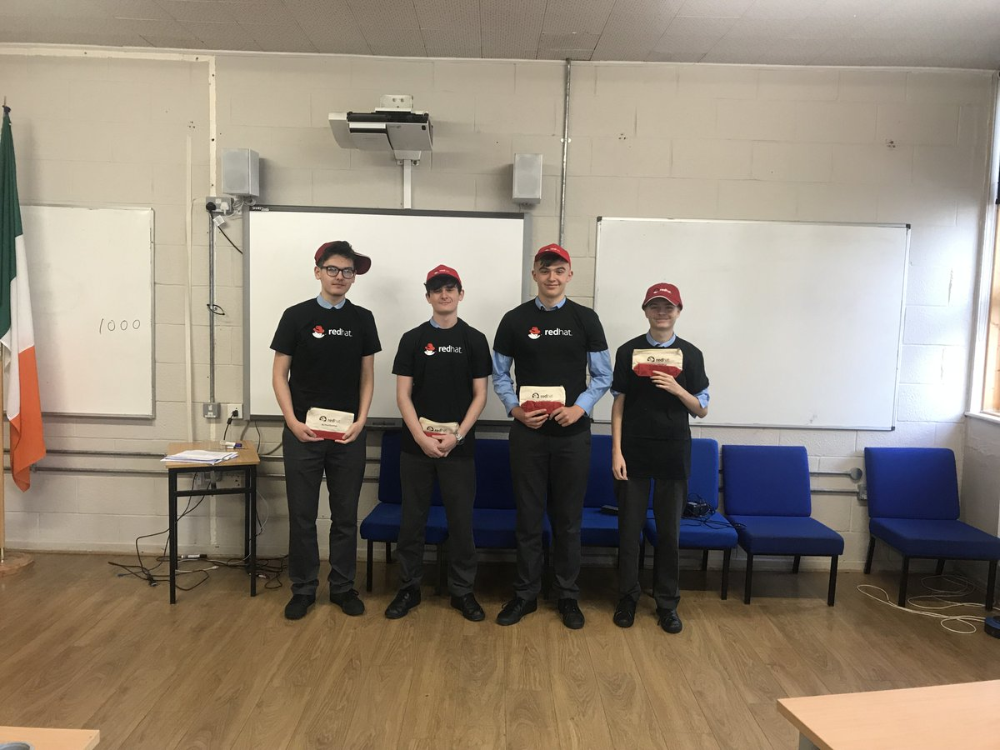

My coding experience
I was interested in computing from a very young age. I would always sit inside and play games or mess around with various software on my computer
I've always dabbled a tiny amount of code here and there, but I never really committed or I didn't spend a lot of time on it in general, however in Transition Year I got an oppertuinity, along with some of my other classmates to work at Red Hat Waterford as an intern. In this internship we mainly dabbled in:
- HTML
- CSS
- git
- Basic JavaScript
After working at the internship for 6 months, I was moved to the TSSG to work with LiquidEdge as an intern. Here I delved into the basics MEAN stack development.
During this internship my school asked me and my red hat classmates to develop a new site for our school together. Here is the github page for the website
After transition year; a new subject was introducted to the Leaving Cert and my school was the lucky 1 of 40 schools in Ireland to have it. That subject was computer science. A lot of things that I learned from my internships were repeated in computer science, however I still learned a lot of new things. I started using python and got to learn a lot about the theory of computing. I ended up with a H2 in Computer Science from the predicted grading.
Now I am in my first semester of System Software Development at the Waterford Institute of Technology. A lot of the things I learned before are still carrying me throughout the course right now, however I know that I can't relax or skip classes because soon enough we will be moving onto new grounds that I haven't explored during my internships.
